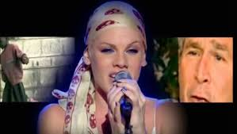

Dear Mr. President, come take a walk with me
대통령님, 제발 저와 함께 걸어주세요
Let's pretend we're just two people and you're not better than me
우린 그냥 평범한 두 사람이고, 당신이 나보다 낫지 않다고 상상해봐요
I'd like to ask you some questions if we can speak honestly
솔직하게 말할 수 있다면 묻고 싶은 게 있어요
What do you feel when you see all the homeless on the street?
길거리의 노숙자들을 볼 때 어떤 기분이 드시나요?
Who do you pray for at night before you go to sleep?
잠들기 전에 당신은 누구를 위해 기도하나요?
What do you feel when you look in the mirror?
거울 속의 자신을 볼 때 어떤 기분인가요?
Are you proud?
당신은 자랑스러우신가요?
How do you sleep while the rest of us cry?
우리는 울고 있는데, 당신은 어떻게 잠들 수 있나요?
How do you dream when a mother has no chance to say goodbye?
어떤 엄마는 작별 인사조차 못했는데, 당신은 어떻게 꿈을 꾸나요?
How do you walk with your head held high?
그렇게 당당하게 고개를 들고 다닐 수 있는 이유가 뭔가요?
Can you even look me in the eye and tell me why?
내 눈을 똑바로 보며 왜 그런지 말할 수 있나요?
Dear Mr. President, were you a lonely boy?
대통령님, 어린 시절 외로웠나요?
Were you a lonely boy? Are you a lonely boy?
외로운 소년이었나요? 지금도 외롭나요?
How can you say no child is left behind?
어떻게 감히 '어떤 아이도 뒤처지지 않는다'고 말할 수 있나요?
We're not dumb and we're not blind
우리는 멍청하지도, 눈이 먼 것도 아니에요
They're all sitting in your cells while you pave the road to hell
당신은 지옥으로 가는 길을 포장하고, 사람들은 그 감옥에 갇혀 있어요
What kind of father would take his own daughter's rights away?
어떤 아버지가 딸의 권리를 빼앗을 수 있나요?
And what kind of father might hate his own daughter if she were gay?
만약 딸이 동성애자라면 그녀를 미워할 아버지가 있나요?
I can only imagine what the first lady has to say
퍼스트레이디는 무슨 말을 하고 싶을지 상상만 할 수 있겠네요
You've come a long way from whiskey and cocaine
당신도 한때는 위스키와 코카인에 젖어 있지 않았나요?
Let me tell you 'bout hard work
진짜 '고통'에 대해 말해볼게요
Minimum wage with a baby on the way
최저임금을 받으며 아이를 기다리는 고통
Let me tell you 'bout hard work
그게 진짜 고통이에요
Rebuilding your house after the bombs took them away
전쟁으로 집이 무너지고 다시 짓는 고통
Let me tell you 'bout hard work
고통이 뭔지 아세요?
Building a bed out of a cardboard box
골판지 상자를 침대로 만드는 삶이에요
Let me tell you 'bout hard work
그게 우리가 사는 현실이에요
Hard work, hard work
고통이에요, 진짜 고통
You don't know nothing 'bout hard work
당신은 그런 고통을 몰라요
How do you sleep at night?
당신은 그런 세상에서 어떻게 잠을 자나요?
How do you walk with your head held high?
당신은 왜 그렇게 당당하죠?
Dear Mr. President, you'd never take a walk with me
대통령님, 당신은 나와 함께 걷지 않을 거에요
Would you?
그렇지 않나요?
I hope the Russians love their children too
저는 러시아인들도 자식을 사랑하길 바라요